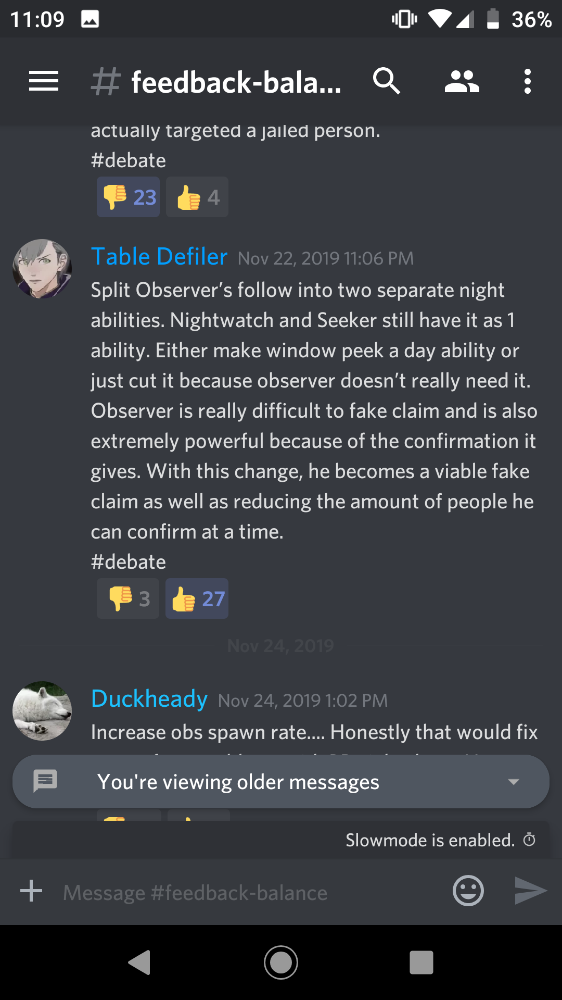

Anyways this is already off-topic?
Lets get to on-topic again. Nothing you suggest would be suggested or wished by the current players.
I can literally prove that false by current players I know who agree and even then that’s still a jab at me and not at all on-topic
All suggestions in these directions got heavily downvoted in the discord I think.
I didn’t mean it as an insult. Imo its a fact.
That reeks of logical fallacy
1 Like
Right. Just because the players hate it, doesnt mean it necessarily would be bad for balancing itself.
I mean I madly want old Merc back but it would be so bad for balance
1 Like
Problem is tho: the problems orange tries to fix with his suggestions are seen as non-issues by the players
1 Like
Your definition of “the players” is both overly restrictive and also not really helpful to game longevity?
With a (at least pre-Jingle Jam) declining playerbase it’s hard to miss that those still there are of course the people who like how things are.
I’d posit that you could find more success overall with changes focused on living up to the game’s own marketing, but maybe that’s just me.
1 Like
I havent rode a bike in years, bet I still can do it just fine
To be fair, bike riding doesn’t get balance patches
To be fair, depending on when you last played neither does ToL 
3 Likes
Bike 2.0. All Bikes now have three wheels as we felt the meta needed it
Every player who has played like 50 matches or so in the last year?

3 Likes
I stand corrected
Anyways my point here was ‘both of you are perfectly capable of coming up with decent balance suggestions, maybe you should stop assuming the other one has no idea what they’re talking about’ but apparently that’s too complicated or something
1 Like
holy shit
1 Like
Well it’s wrong  but not completely
but not completely
looks at thread title
looks at thread
yes
2 Likes